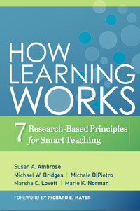

April 2018

The Mission
The Carpentries make researchers in science, engineering, and medicine more productive by teaching them basic lab skills for scientific computing
The Problem
- Scientists spend more and more time building and using software
- Most are primarily self-taught
- Hard to measure how well they do things
- But anecdotal evidence suggests "not very"
Our Solution
- Scientists teaching scientists
- Two days of hands-on learning
| the Unix shell | ⇒ | automate repetitive tasks |
| Git and GitHub | ⇒ | track and share work |
| Python or R | ⇒ | build modular code |
| SQL | ⇒ | manage data |
Advertise the tool, teach the thinking
Outcomes
- 10-20% improvement in productivity is common
- 10X isn't rare
- Do the old things faster
- Tackle new problems
- Ready for HPC, the cloud, big data, ...
- Start doing open science
The Details
- Materials are all open access
- Instructors are volunteers
- Host site pays for instructor travel and accommodation
- Administrative fee to cover central costs if we're helping organize
Principles of Computational Thinking
What
- Big ideas behind everything that is taught.
- Don't make sense until you've seen the examples that they generalize.
Seven Big Ideas
Principle #1
It's All Data
- Papers, observations, and images are all stored as 1's and 0's.
-
Source code is just text files
- So it can be manipulated like text.
-
A program in memory is just bytes
- Manipulating those bytes is no different from manipulating characters or pixels.
Principle #2
Data Is Meaningless
Without Interpretation
-
01100100011000010111100001100001is:- the word "data"
- or the integer 1,684,108,385
- or the number 1.6635613602263159e+22
- or a bluish-gray pixel that's slightly transparent
- Et cetera
- Because computer don't understand: they obey
Principle #3
Programming Is About
Creating Abstractions
- Short-term memory can only hold 7±2 item.
- Must put details into groups (of groups...)
- Most features of programming languages exist to help do this.
Principle #3
Programming is about
creating abstractions.
- Separate interface (what something does) from implementation (how it works).
- Value clarity over cleverness.
Principle #4
Models For Computers,
Views For People
- A model is a representation that is easy for a computer to operate on.
- A view is a display that people can understand.
- Store models - show views.
Principle #4

Principle #5
Paranoia makes us productive.
- Best way to improve productivity is to improve quality.
- Write tests to clarify meaning as well as to catch errors.
- Automate, automate, automate.
Principle #6
Algorithms beat hardware.
| Data Size | O(log n) | O(n) | O(n2) | O(2n) |
|---|---|---|---|---|
| 1 | 1 | 1 | 1 | 1 |
| 10 | 2.3 | 10 | 100 | 1024 |
| 100 | 4.5 | 100 | 10,000 | 1.26×1030 |
Principle #7
The tool shapes the hand.
- Knowing how tools work gives you new ideas about how to use them.
- And about what new tools you could create.
Learn More
Best Practices in
Scientific Computing
Background
- Software is lab equipment for the 21st Century
- Scientists spend a lot of time writing it
- But over 90% are self-taught
- They don't know what "good" looks like
- So we describe 24 practices in 8 groups
Good programmers are
10X more productive than average
Good practices are
10X more productive than average
Rule 1
Write Programs for People,
not Computers
- Hard to tell if code that's difficult to understand is doing what it's supposed to
- Hard for other scientists to re-use it...
- ...including your future self
Rule 1a
A program should not require its readers to hold more than a handful of facts in memory at once.
- Short-term memory can hold 7±2 items
- So break programs into short, readable functions, each taking only a few parameters
Rule 1b
Make names consistent, distinctive, and meaningful.
pdoesn't help the reader's short term memory as much aspressure- Don't use
tempfor both "temporary" and "temperature" i,jare OK for indices in small scopes
Rule 1c
Make code style and formatting consistent.
- Which rules don't matter — having rules does
- Brain assumes all differences are significant
- Every inconsistency slows comprehension
Rule 2
Let the Computer Do the Work
- Computers exist to repeat things quickly
- 99% accuracy ⇒ 63% of at least one error per hundred repetitions
Rule 2a
Make the computer repeat tasks.
- Write little programs for everything
- Even if they're called scripts, macros, or aliases
- Easier to do this with text-based programming systems than with GUIs
Rule 2b
Save recent commands in a file for re-use.
- Most text-based interfaces do this automatically
- Repeat recent operations using
history - "Reproducibility in the small"
- Repeat recent operations using
- Saving history supports "reproducibility in the large"
- An accurate record of how a result was produced
- If everything can be captured
Rule 2c
Use a build tool to automate workflows.
- Originally developed for compiling programs
- Can be used whenever some files depend on others
- Makes workflow explicit
Rule 3
Make Incremental Changes
- Most scientists don't have "requirements"
- They are their own users
- Code evolves in tandem with research
- Closest fit from industry is agile development
Rule 3a
Work in small steps with frequent feedback
and course correction.
- People can concentrate for 45-90 minutes without a break
- So size each burst of work to fit that
- Longer cycle should be a week or two
Rule 3b
Use a version control system.
- Tracks changes
- Allows them to be undone
- Supports independent parallel development
- Essential for collaboration collaboration
Rule 3c
Put everything that has been created manually
in version control.
- Not just software: papers, raw images, ...
- Not gigabytes...
- ...but metadata about those gigabytes
- Leave out things generated by the computer
- Use build tools to reproduce those instead
- Unless they take a very long time to create
Rule 4
Don't Repeat Yourself (or Others)
- Anything repeated in two or more places will eventually be wrong in at least one
- If it's faster to re-create than to discover or understand, fix it
Rule 4a
Every piece of data must have
a single authoritative representation in the system.
- Define constants exactly once
- Ditto file formats, geographical locations, ...
Rule 4b
Modularize code rather than copying and pasting.
- Reducing code cloning reduces error rates
- Cuts the amount of testing needed
- And increases comprehension
Rule 4c
Re-use code instead of rewriting it.
- It takes experts years to build high-quality numerical or statistical software
- Your time is better spent doing science on top of that
Rule 5
Plan for Mistakes
- No single practice catches everything
- So practice defense in depth
Note: improving quality increases productivity
Rule 5a
Add assertions to programs to check their operation.
- "This must be true here or there is an error"
- Like diagnostic circuits in hardware
- No point proceeding if the program is broken...
- ...and they serve as executable documentation
Rule 5b
Use an off-the-shelf unit testing library.
- Manages setup, execution, and reporting
- Re-run unit tests after every change to the code to check for regression
Testing is Hard
- "If I knew what the right answer was, I'd have published by now."
- Compare to experimental data
- Or to analytic solutions of simple problems
- Or to old (trusted) programs
- If nothing else, forces scientists to document what "errors" are acceptable
Rule 5c
Turn bugs into test cases.
- Write a test that fails when the bug is present
- Then work on the code until that test passes...
- ...and no others are failing
Test-Driven Development
- Why wait? Always write the tests, then the code
- Improves focus
- Encourages writing testable code
- And ensures tests actually get written...
- "Red, green, refactor"
Rule 5d
Use a symbolic debugger.
- Explore the program as it runs
- Better than print statements
- You don't have to re-run...
- ...or guess in advance what you'll need to know
- Use breakpoints to stop program at particular points or when particular things are true
Rule 6
Optimize Software
Only After It Works Correctly
- Even experts find it hard to predict performance bottlenecks
- Small changes to code often have dramatic impact on performance
- So get it right, then make it fast
Rule 6a
Use a profiler to identify bottlenecks.
- Reports how much time is spent on each line of code
- Re-check on new computers or when switching libraries
- Summarize across unit tests
Rule 6b
Write code in the highest-level language possible.
- People write the same number of lines of code per hour regardless of language
- So use the most expressive language available to get the "right" version...
- ...then rewrite core pieces (possibly in a lower-level language) to get the "fast" version
Rule 7
Document Design and Purpose,
not Mechanics
- Goal is to make the next person's life easier
- Focus on things the code doesn't say
- Or doesn't say clearly
- E.g., file formats
- An example is worth a thousand words...
Rule 7a
Document interfaces and reasons,
not implementations.
- Interfaces and reasons change more slowly than implementation details, so documenting them is better economics
- And most people care about using code more than understanding it
Rule 7b
Refactor code in preference to
explaining how it works.
- Good code can be understood when read aloud
- Good programmers build libraries so that solving their problem is straightforward
- Again, "red, green, refactor"
Rule 7c
Embed the documentation for a piece of software
in that software.
- Specially-formatted comments or strings
- More likely to be kept up to date
- More accessible to interactive help
- Many modern tools embed code in documentation rather than vice versa
Rule 8
Collaborate
- Computers were invented to calculate
- The web was invented to collaborate
- Science is more fun when it's shared
Rule 8a
Use pre-merge code reviews.
- Have someone else review changes before merging in version control
- Significantly reduces errors
- Good way to share knowledge
- It's what makes open source possible
Rule 8b
Use pair programming
when bringing someone new up to speed
and when tackling particularly tricky problems.
- Two people, one keyboard, one screen
- An extreme form of code review
- Can get a bit tired if done all the time...
Rule 8c
Use an issue tracking tool.
- A shared to-do list
- Items can be assigned to people
- Supports comments, links to code and papers, etc.
- "Version control is where we've been, the issue tracker is where we're going"
Software Carpentry:
Lessons Learned
Not an Overnight Success

Los Alamos National Laboratory, July 1998
If you were born then, you can drive now.
Why We Exist
 |
 |
|
| HPC, the cloud, big data | the other 92% |
Lesson #1
Most researchers think programming is
a tax they have to pay to do science.
"If I wanted to be a computer scientist,
I would have picked a different major in undergrad."
Lesson #2
They don't care about reproducibility.
- Five million papers published 1990–2000.
- 100 retracted for computational reasons.
- So odds of retraction = 1 in 50,000.
- Average paper takes eight months to produce.
- Reproducibility worth 115 seconds per paper.
Lesson #3
They care a lot about productivity.
- And about being able to tackle new problems.
- And about their careers.
Lesson #4
The curriculum is full.
- "What do I drop to make room for more computing: quantum or thermo?"
- 5 minutes per lecture ⇒ 4 courses in a degree
- Have to fit in around the curriculum until we achieve critical mass
What Winning Looks Like
| # Reviewers | % Papers |
| 2 | 10% |
| 3 | 40% |
| 4 | 40% |
| 5 | 10% |
| P(at least one reviewer is a believer) | 50% |
| P(single reviewer is a believer) | 18.3% |
We only have to change the mind of 1 scientist in 5
Lesson #5
It's all in the details.
| Two days | Charge a fee |
| Live coding | Sticky notes |
| Group signup | Peer instructors |
Lesson #6
Incentives, incentives, incentives.
| Save the world | Make new friends |
| Self-defense | Teach to learn |
Boost their careers
Lesson #7
There's a lot we don't know.
- How to measure programmers' productivity?
- How to measure scientists' productivity?
- The unknowns don't cancel out
Our biggest failing is lack of systematic assessment
Lesson #8
There's a lot we do know.
|  |  |
For Example
Lesson #9
Most people would rather fail than change.
Most scientists treat research on teaching and programming like most politicians treat research on climate change.
Lesson #10
Open isn't just for science.
- Our lessons have had over 150 contributors
- We can write them the way we write software and encyclopedias
Open collaboration is the real revolution.
/